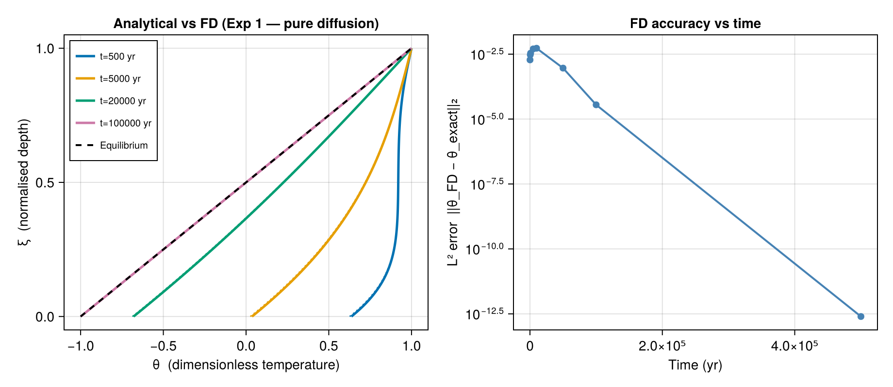
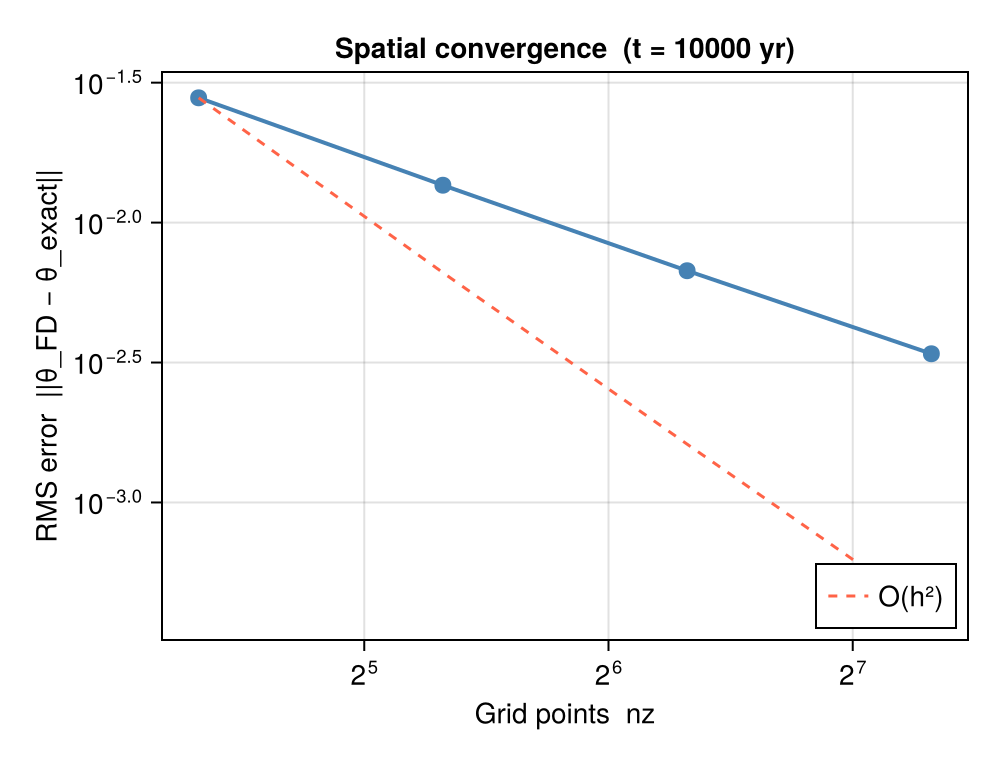

Model Verification
Ice-sheet and glacier models solve the same transient heat equation numerically. IceColumnSolutions provides the analytical solution against which those numerical results can be verified.
This page demonstrates the workflow in two parts:
Synthetic verification — a self-contained finite-difference (FD) solver is built in ~20 lines and compared against the analytical solution. This mimics what you would do when checking a new numerical implementation.
Loading real model output — pseudocode shows how to load temperature profiles from a NetCDF file (e.g., output from Elmer/Ice, PISM, or Úa) and compute the same error metrics.
Synthetic FD verification
The example below implements an explicit Euler FD scheme for Exp 1 (pure diffusion), runs it for the same times used in the benchmark, and overlays the profiles against the analytical solution.
The package uses the nondimensionalisation $\theta = T / T_\text{air}$, $\xi = z / L$, so:
- Surface BC ($\xi = 1$): $\theta = 1 \Rightarrow T_\text{surf} = T_\text{air}$
- Base BC ($\xi = 0$): $\partial\theta/\partial\xi = \gamma \Rightarrow \partial T/\partial z\big|_\text{base} = \gamma\,T_\text{air}/L$
using IceColumnSolutions, CairoMakie, LinearAlgebra, Statistics
# ── analytical solution (Exp 1) ──────────────────────────────────────────────
par = benchmark(:exp1)
T0 = 230.0 # initial temperature (K)
ts = [500.0, 5_000.0, 20_000.0, 100_000.0] # output times (yr)
nz = 100
sol_eq = solve(par; nz=nz)
sol = solve(par, ts; init=uniform(T0), n_modes=12, nz=nz)
# ── explicit Euler FD solver ──────────────────────────────────────────────────
"""
Explicit Euler 1D diffusion solver for an ice column.
Returns (theta_fd, zeta) where theta_fd[i,j] = θ(ξ_i, t_j) = T(z_i, t_j) / T_air,
ξ is normalised depth (0 = base, 1 = surface).
"""
function fd_solve(par, ts_out; nz=100)
YR = 365.25 * 24 * 3600
κ = par.kappa # m² s⁻¹
L = par.L # m
γ = par.gamma # dimensionless basal-heat parameter
Tair = par.T_air # K — temperature scale
dz = L / (nz - 1)
dt = 0.4 * dz^2 / κ # explicit Euler stability: r = κ dt/dz² ≤ 0.5
r = κ * dt / dz^2
T = fill(T0, nz) # uniform initial condition (K)
ts_s = ts_out .* YR # convert output times yr → s
results = zeros(nz, length(ts_out))
t = 0.0
i_out = 1
while i_out ≤ length(ts_s)
if t >= ts_s[i_out] - 0.5 * dt
results[:, i_out] .= T ./ Tair # record θ = T / T_air
i_out += 1
continue
end
T_new = copy(T)
for k in 2:nz-1
T_new[k] = T[k] + r * (T[k+1] - 2T[k] + T[k-1])
end
# Surface BC (ξ=1, index nz): θ=1 ⟹ T = T_air
T_new[end] = Tair
# Base BC (ξ=0, index 1): ∂θ/∂ξ = γ ⟹ ∂T/∂z = γ T_air / L
# Forward difference: (T[2] - T[1]) / dz = γ T_air / L
T_new[1] = T_new[2] - γ * Tair / L * dz
T .= T_new
t += dt
end
zeta = collect(range(0.0, 1.0; length=nz))
return results, zeta
end
theta_fd, zeta_fd = fd_solve(par, ts; nz=nz)
# ── figure ────────────────────────────────────────────────────────────────────
fig = Figure(size=(920, 400))
ax1 = Axis(fig[1,1],
xlabel = "θ (dimensionless temperature)",
ylabel = "ξ (normalised depth)",
title = "Analytical vs FD (Exp 1 — pure diffusion)")
colors = Makie.wong_colors()
for (j, t) in enumerate(ts)
lines!(ax1, sol.theta[:, j], sol.zeta;
color=colors[j], linewidth=2.5, label="t=$(Int(t)) yr")
lines!(ax1, theta_fd[:, j], zeta_fd;
color=colors[j], linewidth=1.5, linestyle=:dot)
end
lines!(ax1, sol_eq.theta_eq, sol_eq.zeta;
color=:black, linestyle=:dash, linewidth=2, label="Equilibrium")
axislegend(ax1; position=:lt, labelsize=10,
title="Solid = analytical, dotted = FD")
# ── right: L² error vs time ───────────────────────────────────────────────────
ax2 = Axis(fig[1,2],
xlabel = "Time (yr)",
ylabel = "L² error ||θ_FD − θ_exact||₂",
title = "FD accuracy vs time",
yscale = log10)
ts_check = [100.0, 500.0, 1_000.0, 5_000.0, 10_000.0,
50_000.0, 100_000.0, 500_000.0]
sol_check = solve(par, ts_check; init=uniform(T0), n_modes=12, nz=nz)
theta_fd_chk, _ = fd_solve(par, ts_check; nz=nz)
dz_fd = 1.0 / (nz - 1)
l2_err = [norm(theta_fd_chk[:, j] .- sol_check.theta[:, j]) * sqrt(dz_fd)
for j in eachindex(ts_check)]
scatter!(ax2, ts_check, l2_err; color=:steelblue, markersize=10)
lines!( ax2, ts_check, l2_err; color=:steelblue, linewidth=2)
fig
The explicit Euler scheme uses $r = \kappa \Delta t / \Delta z^2 = 0.4$ (below the stability limit of 0.5). A production ice-sheet model would typically use an implicit Crank–Nicolson or fully-implicit scheme. The dotted curves (FD) overlap the solid curves (analytical) almost exactly at $t \ge 5000$ yr; small discrepancies at early times reflect the large explicit time step.
Loading real model output
Real model output is typically stored in NetCDF files. The workflow below assumes a file model_output.nc with variables zeta (normalised depth, 0 = base to 1 = surface) and theta (dimensionless temperature $T/T_\text{air}$), and a dimension time in years.
using IceColumnSolutions, NCDatasets, LinearAlgebra
# ── load model output ─────────────────────────────────────────────────────────
ds = Dataset("model_output.nc", "r")
zeta_model = ds["zeta"][:] # length nz_model
theta_model = ds["theta"][:, :] # nz_model × nt
ts_model = ds["time"][:] # years
close(ds)
# ── set up the matching analytical parameter set ──────────────────────────────
par = IceColumnPar(
1000.0, # L — ice thickness (m)
250.0, # T_air — surface temperature (K)
1e-6, # kappa — thermal diffusivity (m² s⁻¹)
2.0, # k — thermal conductivity (W m⁻¹ K⁻¹)
0.0, # beta — surface insulation (m); 0 = Dirichlet
0.06; # G — geothermal heat flux (W m⁻²)
)
# ── compute analytical solution on the model's depth grid ────────────────────
# (n_modes=12 is sufficient for Pe=0; increase for Pe>0 cases)
sol_ana = solve(par, ts_model;
init = uniform(230.0),
n_modes = 12,
nz = length(zeta_model))
# Note: the analytical solution is evaluated on a uniform ζ grid; interpolate
# to zeta_model if the model uses a non-uniform grid.
# ── compute L² error at each output time ─────────────────────────────────────
nz_m = length(zeta_model)
dz = 1.0 / (nz_m - 1)
l2_err = map(eachindex(ts_model)) do j
diff_theta = theta_model[:, j] .- sol_ana.theta[:, j]
sqrt(sum(diff_theta.^2) * dz)
end
println("Max L² error across all times: ", maximum(l2_err))IceColumnSolutions projects the initial condition onto the eigenfunction basis via Gaussian quadrature. If your model starts from a non-uniform profile, pass init = your_theta_vector (length-nz vector of θ = T/T_\text{air} values on a uniform $[0,1]$ grid) instead of uniform(T0).
Spatial convergence rate test
A clean way to verify second-order spatial convergence of a numerical scheme is to refine the grid and measure how the error scales:
nz_vals = [20, 40, 80, 160]
t_test = 10_000.0 # yr — transient, not yet at equilibrium
# reference: analytical at high resolution
sol_ref = solve(par, [t_test]; init=uniform(T0), n_modes=12, nz=500)
errors = Float64[]
for nz_fd in nz_vals
theta_test, zeta_test = fd_solve(par, [t_test]; nz=nz_fd)
# interpolate reference to same grid (linear)
th_ref = [sol_ref.theta[argmin(abs.(sol_ref.zeta .- ξ)), 1]
for ξ in zeta_test]
push!(errors, sqrt(mean((theta_test[:, 1] .- th_ref).^2)))
end
fig2 = Figure(size=(500, 380))
ax = Axis(fig2[1,1],
xlabel = "Grid points nz",
ylabel = "RMS error ||θ_FD − θ_exact||",
title = "Spatial convergence (t = $(Int(t_test)) yr)",
xscale = log2, yscale = log10)
scatter!(ax, nz_vals, errors; color=:steelblue, markersize=12)
lines!( ax, nz_vals, errors; color=:steelblue, linewidth=2)
# overlay O(h²) reference line through the coarsest-grid point
h = 1.0 ./ (nz_vals .- 1)
C = errors[1] / h[1]^2
lines!(ax, nz_vals, C .* h.^2;
color=:tomato, linestyle=:dash, linewidth=1.5, label="O(h²)")
axislegend(ax; position=:rb)
fig2
The dashed red line confirms second-order convergence: halving the grid spacing quarters the error, as expected for a central-difference Laplacian.